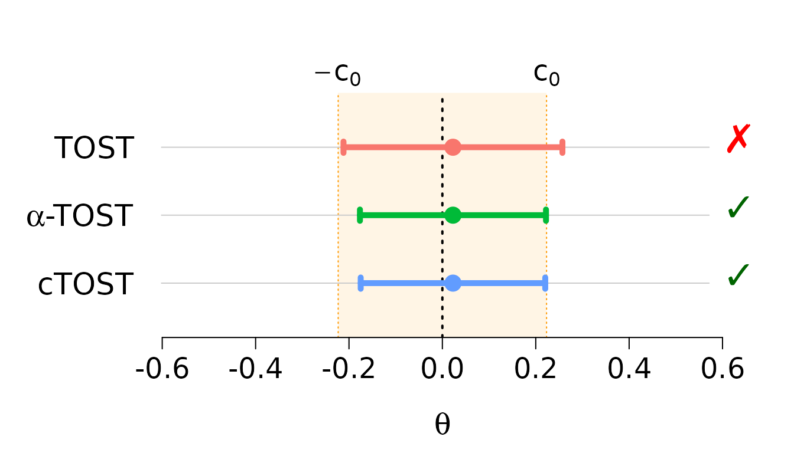

Introduction
The cTOST package provides tools for equivalence
testing using the Two One-Sided Tests (TOST) procedure. Unlike
traditional hypothesis testing that aims to detect differences,
equivalence testing aims to demonstrate that two treatments are
similar enough to be considered equivalent.
Key features:
- Finite sample corrections for more accurate testing with small samples
- Univariate and multivariate equivalence testing
- Quantile-based equivalence testing
- Differential privacy equivalence testing for sensitive data
This vignette provides a quick start guide to using the main functions in the package.
Installation
# From CRAN
install.packages("cTOST")
# From GitHub (development version)
devtools::install_github("stephaneguerrier/cTOST")What is Equivalence Testing?
In many applications, especially bioequivalence studies for generic drugs, we want to show that two treatments produce equivalent effects. The equivalence region is typically defined as , where is the equivalence margin.
Key concepts:
- Null hypothesis: The treatments are NOT equivalent (difference is outside )
- Alternative hypothesis: The treatments ARE equivalent (difference is inside )
- Common equivalence margin: in bioequivalence studies
Basic Usage: Univariate TOST
Let’s start with a simple example using the built-in
skin dataset, which contains measurements of econazole
nitrate delivery from a reference product and a generic bioequivalent
product.
Load and Inspect Data
data(skin)
head(skin)
#> Reference Generic
#> Obs.1 5.739053 5.813981
#> Obs.2 6.560818 6.811332
#> Obs.3 6.731042 6.973451
#> Obs.4 5.535548 6.128285
#> Obs.5 6.548992 6.301647
#> Obs.6 6.445193 6.998245
# Sample size
n <- nrow(skin)The dataset has 17 paired observations comparing a Reference and Generic product.
Compute Test Statistics
For a paired design, we compute the mean difference and its variance:
# Mean difference (Generic - Reference)
theta_hat <- diff(apply(skin, 2, mean))
# Degrees of freedom
nu <- n - 1
# Variance of the difference
sig_hat <- var(apply(skin, 1, diff)) / nu
cat("Estimated difference:", round(theta_hat, 4), "\n")
#> Estimated difference: 0.0227
cat("Estimated variance:", round(sig_hat, 4), "\n")
#> Estimated variance: 0.018
cat("Degrees of freedom:", nu, "\n")
#> Degrees of freedom: 16Run Standard TOST
The standard Two One-Sided Tests (TOST) can be performed using
ctost() with method = "unadjusted":
# Equivalence margin (log(1.25) is standard for bioequivalence)
delta <- log(1.25)
# Standard TOST (unadjusted)
standard_tost <- ctost(
theta = theta_hat,
sigma = sig_hat,
nu = nu,
delta = delta,
alpha = 0.05,
method = "unadjusted"
)
print(standard_tost)
#> ✖ Can't accept (bio)equivalence
#> Equiv. Region: |---------------0---------------|
#> Estim. Inter.: (---------------x----------------)
#> CI = (-0.21174 ; 0.25715)
#>
#> Method: TOST
#> alpha = 0.05; Equiv. lim. = +/- 0.22314
#> Mean = 0.02270; Stand. dev. = 0.13428; df = 16Run Corrected TOST (cTOST)
The standard TOST is known to be conservative (too
strict) in finite samples. The cTOST package implements
finite sample corrections to improve power while maintaining the correct
type I error rate.
Alpha-TOST
The alpha-TOST adjusts the significance level:
alpha_tost <- ctost(
theta = theta_hat,
sigma = sig_hat,
nu = nu,
delta = delta,
alpha = 0.05,
method = "alpha"
)
print(alpha_tost)
#> ✔ Accept (bio)equivalence
#> Equiv. Region: |----------------0----------------|
#> Estim. Inter.: (---------------x--------------)
#> CI = (-0.17654 ; 0.22194)
#>
#> Method: alpha-TOST
#> alpha = 0.05; Equiv. lim. = +/- 0.22314
#> Corrected alpha = 0.07866
#> Mean = 0.02270; Stand. dev. = 0.13428; df = 16Optimal cTOST (Recommended)
The optimal method provides the best power:
optimal_tost <- ctost(
theta = theta_hat,
sigma = sig_hat,
nu = nu,
delta = delta,
alpha = 0.05,
method = "optimal"
)
print(optimal_tost)
#> ✔ Accept (bio)equivalence
#> Equiv. Region: |----------------0----------------|
#> Estim. Inter.: (---------------x--------------)
#> CI = (-0.17492 ; 0.22032)
#>
#> Method: cTOST
#> alpha = 0.05; Equiv. lim. = +/- 0.22314
#> Estimated c(0) = 0.02553
#> Finite sample correction: offline
#> Corrected alpha = 0.03853
#> Mean = 0.02270; Stand. dev. = 0.13428; df = 16Compare Methods
Use compare_to_tost() to see the difference between
standard and corrected methods:
compare_to_tost(alpha_tost)
#> TOST:
#> ✖ Can't accept (bio)equivalence
#> alpha-TOST:
#> ✔ Accept (bio)equivalence
#>
#> Equiv. Region: |---------------0---------------|
#> TOST: (---------------x----------------)
#> alpha-TOST: (-------------x--------------)
#>
#> CI - low CI - high
#> TOST: -0.21174 0.25715
#> alpha-TOST: -0.17654 0.22194
#>
#> Equiv. lim. = +/- 0.22314Visualize Results
The package provides plotting functionality to visualize confidence intervals:
plot(standard_tost, alpha_tost, optimal_tost)
The plot shows:
- Point estimates (dots)
- Confidence intervals (lines)
- Equivalence region (shaded area)
- Decisions (checkmark = accept equivalence, cross = reject)
Multivariate Equivalence Testing
For testing multiple parameters simultaneously, use the same
ctost() function with a covariance matrix.
Example with Ticlopidine Data
data(ticlopidine)
head(ticlopidine)
#> t_half AUC AUC_inf C_max
#> 1 -0.53754869 -0.27634036 -0.35181658 -0.11308276
#> 2 0.59089709 0.27355003 0.32736142 0.36251520
#> 3 0.14547051 0.12543294 0.14683852 0.16868248
#> 4 -0.60282454 -0.46041725 -0.49165900 -0.67511707
#> 5 -0.08664339 -0.09831984 -0.07991007 -0.32912619
#> 6 -0.34985932 -0.33778740 -0.35680878 -0.02673381
# Sample size and dimensions
n <- nrow(ticlopidine)
p <- ncol(ticlopidine)
# Compute multivariate statistics
theta_hat <- colMeans(ticlopidine)
Sigma_hat <- cov(ticlopidine) / n
nu <- n - 1
cat("Number of parameters:", p, "\n")
#> Number of parameters: 4
cat("Sample size:", n, "\n")
#> Sample size: 20Run Multivariate TOST
mv_tost <- ctost(
theta = theta_hat,
sigma = Sigma_hat,
nu = nu,
delta = log(1.25),
alpha = 0.05,
method = "optimal"
)
print(mv_tost)
#> ✔ Accept (bio)equivalence
#> Equiv. Region: |----------------0----------------|
#> t_half (----------x----------)
#> AUC (-------x-------)
#> AUC_inf (-------x-------)
#> C_max (--------x---------)
#>
#> CIs:
#> t_half (-0.14520 ; 0.11256)
#> ✔
#> AUC (-0.17694 ; 0.00132)
#> ✔
#> AUC_inf (-0.17055 ; 0.00761)
#> ✔
#> C_max (-0.21300 ; 0.01075)
#> ✔
#>
#> Method: cTOST
#> alpha = 0.05; Equiv. lim. = +/- 0.22314The test evaluates whether all parameters simultaneously fall within the equivalence region.
Visualize Multivariate Results
plot(mv_tost)
Each row shows a different parameter with its confidence interval and equivalence decision.
Next Steps
This vignette covered the basics of equivalence testing with
cTOST. For more details, see:
- Average Equivalence Testing: Univariate - In-depth guide to univariate methods
- Average Equivalence Testing: Multivariate - Multivariate testing details
- Quantile Equivalence Testing - Testing equivalence at specific quantiles
- Differential Privacy Equivalence Testing - Equivalence testing for sensitive data
- Mathematical Background - Theory and mathematical details
References
Boulaguiem, Y., Quartier, J., Lapteva, M., Kalia, Y. N., Victoria-Feser, M. P., & Guerrier, S. (2024). Finite sample adjustments for average equivalence testing. Statistics in Medicine, 43(3), 535-556. https://doi.org/10.1002/sim.9993
Boulaguiem, Y., Insolia, L., Victoria-Feser, M. P., & Guerrier, S. (2024). Multivariate adjustments for average equivalence testing. arXiv preprint arXiv:2411.16429.
Insolia, L., Boulaguiem, Y., Victoria-Feser, M. P., Salvioni, C., Mandija, F., & Guerrier, S. (2025). Bioequivalence assessment for locally acting drugs: A framework for feasible and efficient evaluation. arXiv preprint arXiv:2507.22756.